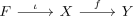
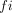
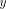
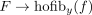

homotopy fibre sequence
1. Definition
A homotopy fibre sequence is a sequence of composable continuous maps

together with a nullhomotopy of

to a constant map with value
such that the induced map
A homotopy fibre sequence is a sequence of composable continuous maps

together with a nullhomotopy of

to a constant map with value
such that the induced map